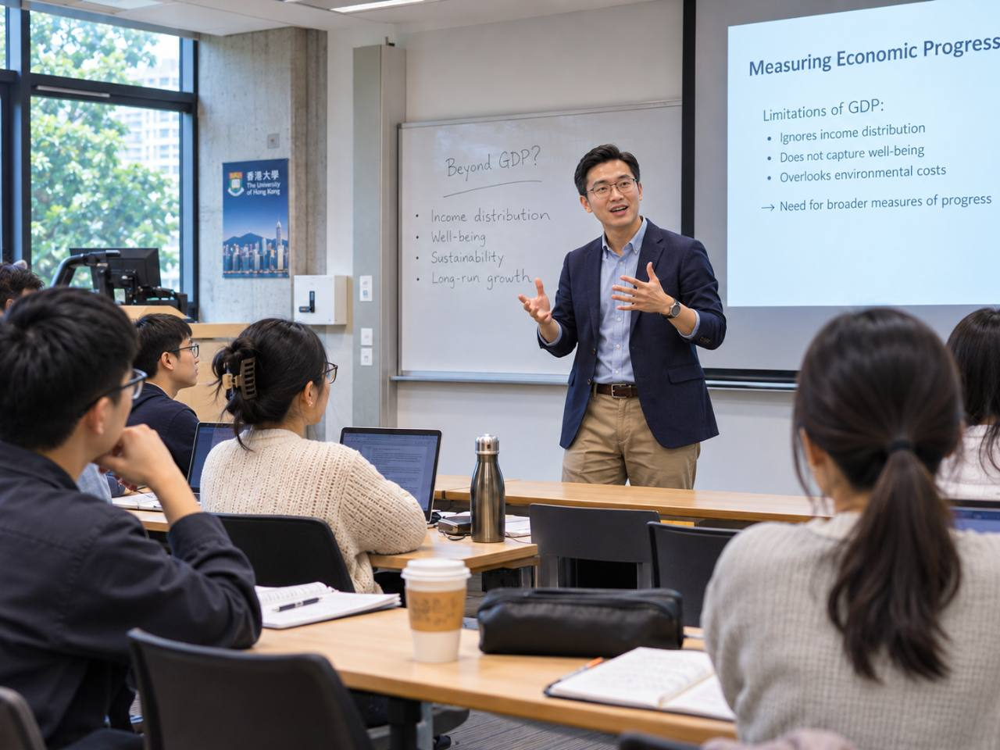

Knowledge, cognitive offloading, and the difference between completing a task and actually learning
Imagine a student completing every assignment with the help of artificial intelligence. The written answers are accurate, the reasoning appears convincing, and the work is submitted on time. The student passes.
Then we remove the AI.
What can the student still explain? What can they remember? What decisions can they make when a patient, a colleague, or a problem presents something unexpected?
The difference between what a student can produce with a tool and what the student has actually learned may be one of the most important questions facing education.
I have written before about beginning with the curriculum rather than the technology. But I think there is an even more fundamental question underneath that argument: what is learning supposed to leave behind?
If a student uses AI or virtual reality (VR), the experience should do more than generate engagement or a polished outcome. Something needs to change in the learner: their understanding, memory, judgement, skill, capacity to explain, or ability to act in a new situation. Otherwise, we may have improved the activity without improving the learning.
And if AI can increasingly do the work for us, we may need to be more deliberate about deciding which kinds of knowledge and skill people must retain.

We have become very good at measuring the completed task
Consider what often counts as success in education: a student submits a report, a group delivers a presentation, a learner completes an online activity, or someone finishes a simulation and receives a score.
These outcomes tell us something, but not necessarily what we want to know.
A student may produce an excellent explanation of clinical reasoning because they understand the underlying concepts. Or they may have asked AI to construct the explanation and accepted it because it sounded plausible. Both outputs might look similar. What is different is what the learner can do afterwards.
This distinction is supported by recent experimental research. Bastani and colleagues (2025) studied nearly 1,000 high-school mathematics students using two types of GPT-4 support. AI access improved performance while students worked with the tool. However, students given the less restricted AI interface subsequently performed worse than the no-AI group when the tool was removed; a more carefully designed tutor that offered learning-oriented hints largely reduced this problem.
That study does not mean AI always damages learning. It means that better performance during assistance is not proof of better independent capability.
Now consider another result. In a randomised trial with university physics students, Kestin and colleagues (2025) found that a research-designed AI tutor supported greater immediate learning gains in less time than the particular active-learning classroom comparison used in the study. The tutor was not simply an unrestricted answer generator. Its design deliberately drew on established educational principles.
These findings are not contradictory. They point towards a design question:
What does the AI actually make the learner do?
Learning is not the same as receiving information
Information can be presented beautifully. An AI assistant can produce a clear explanation in seconds. A VR headset can make anatomy appear directly in front of a student.
But an explanation being available does not mean it has been understood. An experience being memorable does not mean it can be applied.
Learning often requires learners to connect new information to what they already know, practise retrieving it, receive feedback, test explanations, and apply knowledge in different contexts.
Roediger and Karpicke (2006), for example, demonstrated the importance of retrieval practice for later retention. Asking learners to recall information can support learning beyond simply exposing them to the material again.
The ICAP framework proposed by Chi and Wylie (2014) similarly directs attention towards the quality of cognitive engagement: whether learners are merely receiving content, actively manipulating it, generating new inferences, or constructing understanding through interaction.
This matters when introducing AI. If a chatbot simply supplies the answer, the learner might never need to retrieve, explain or evaluate anything. If the chatbot asks the learner to commit to an initial judgement, explain why, consider an alternative and revise their reasoning, it may help preserve the cognitive work that supports learning.
The tool may be the same. The learning opportunity is not.
If we can outsource memory, why remember anything?
This is where my own experience with AI creates an uncomfortable question.
I increasingly hand off routine tasks to digital tools. I use systems to remind me of commitments, organise information, and prepare material that I would once have assembled manually. Because I no longer need to remember every detail, I probably do remember fewer of those details.
Is that a problem?
Not necessarily.
We have always extended human cognition through external tools. Writing, notebooks, calendars, calculators, and search engines all allow us to accomplish more without holding every piece of information in our heads.
Risko and Gilbert (2016) describe this as cognitive offloading: using the environment or an external aid to reduce the mental demands of a task.
Offloading can be useful. A clinician who consults a current guideline rather than relying solely on memory is not necessarily less competent. A researcher who uses reference-management software is not failing to do research. A lecturer who delegates calendar organisation may be making space for more meaningful teaching.
But AI expands the question dramatically.
A calculator might take over arithmetic. A search engine helps retrieve information. Generative AI may help us retrieve, organise, compare, explain, plan, write and sometimes make recommendations. It can take over not only the routine work around thinking, but parts of the thinking process itself.
If we repeatedly outsource a process, we may have fewer opportunities to practise it. That creates a risk of reduced fluency or retained capability, especially during learning. It does not mean that every outsourced skill automatically disappears from memory; forgetting depends on prior learning, continued use, and context.
The educational question is therefore not whether cognitive offloading is good or bad. It is what we are offloading, why, and at what stage of learning.
Do we still need to learn mathematics?
Take a simple example from school.
We learn that, in ordinary Euclidean geometry, the interior angles of a triangle add up to 180 degrees. How often do most adults calculate the angles of a triangle manually? Probably not very often.
If AI or a calculator can perform the computation, perhaps memorising or practising this seems unnecessary.
Yet consider someone who does not understand what an angle represents, when the triangle relationship applies, or how to judge whether a result is reasonable. They can request an answer. But can they recognise an incorrect one? Can they decide which mathematical idea is relevant? Can they explain the result?
Perhaps the educational value of learning mathematics is not that everyone will repeatedly perform the same calculation throughout adult life. It is partly that mathematics develops structured understanding of quantities, relationships, evidence, and inference.
But there is a trap in saying we should simply teach problem-solving skills instead of knowledge. Problem solving is not independent of what we know.
A student cannot critically evaluate a biomechanical explanation without some knowledge of mechanics. A physiotherapy student cannot recognise an unsafe AI-generated management plan without relevant anatomy, physiology, pathology, and clinical reasoning.
Kirschner, Sweller and Clark (2006) argue that novices particularly benefit from appropriately guided instruction because they do not yet possess the organised knowledge that experts draw upon. Kalyuga and colleagues (2003) also describe the expertise reversal effect: support that benefits a novice may become unnecessary or even counterproductive for a more knowledgeable learner.
This suggests that we should not give the same AI assistance to every student.
The amount and type of support should change as competence develops.
What must remain inside the learner?
Perhaps we should stop asking whether students need knowledge or problem-solving skills. They need both, but not every fact or procedure deserves the same educational priority.
For me, four distinctions are useful:
| What learners need | Example | Appropriate role for AI |
|---|---|---|
| Foundational knowledge | Anatomy, physiology, core mathematical relationships, basic safety principles | Explain, quiz, challenge and reinforce—not replace initial understanding |
| Practised professional capabilities | Clinical examination, communication, clinical reasoning, recognising deterioration | Support rehearsal and feedback while ensuring independent performance |
| Reference knowledge | Complex guidelines, uncommon details, large bodies of literature | Help find and organise information, with the learner verifying relevance and reliability |
| Routine processes | Formatting notes, arranging information, administrative scheduling | Potentially automate, with appropriate checking and accountability |
These are not fixed categories. The same task can move between them depending on the learner, profession and context.
A student learning dosage calculations may need to practise the arithmetic manually to develop numerical judgement. A qualified professional may appropriately use a calculator while retaining the ability to check whether the result is sensible.
Similarly, remembering every possible clinical condition is unrealistic. But recognising a serious red flag and knowing when to escalate cannot depend entirely on whether an AI assistant is available, accurate or authorised for use.
The central question becomes:
What capability would be unsafe, ineffective or professionally irresponsible to lose when the technology is unavailable?
That is where I would begin defining what must be internalised.
AI should adapt to the learner's development
I think there is a tempting but dangerous way to introduce AI into education: give everyone the same powerful assistant and call the experience personalised.
Actual educational adaptation is more demanding.
A first-year student might need a worked example, clear explanation and guided practice before being expected to reason independently. A more experienced student might benefit from being questioned, challenged or asked to compare several management options. A qualified professional might be able to delegate low-risk preparation while independently judging the results.
The underlying aim is not to withhold help for its own sake. It is to give the help that advances learning at that point, then reduce or change the help as capability grows.
We can think of a learning progression in three broad phases:
Develop: Establish concepts through explanation, demonstration, guided practice and feedback.
Challenge: Require recall, justification, decision-making, correction and progressively less support.
Transfer: Ask the learner to perform in a different case or context, sometimes without AI, to see what has actually become their capability.
I am using these as practical design questions, not proposing a validated new educational framework.
The mistake would be to remove support too early, leaving a novice confused. The opposite mistake would be to keep answering for the student long after they should be able to reason.
AI can potentially help educators adjust this support, but its judgement about a student's competence should itself be checked. An apparently confident explanation is not reliable evidence of understanding.
VR faces the same problem
This is not only an AI issue.
I have spent considerable time thinking about how VR can be integrated into health professions education. The excitement around VR is understandable. A learner can explore three-dimensional structures, experience a simulated environment, or rehearse tasks that would otherwise be difficult to arrange.
But immersion is not learning.
Makransky, Terkildsen and Mayer (2019) compared immersive VR with a less immersive science-lab simulation and found higher presence but lower learning in the immersive condition. Higher cognitive load may have contributed. Parong and Mayer (2018) also examined the instructional effectiveness of immersive VR and how additional generative learning strategies might help.
These findings do not show that VR is ineffective. They remind us that making an experience more vivid does not automatically improve the learning it produces.
If students struggle to understand the three-dimensional relationship between anatomical structures, VR may be a good response to a genuine learning difficulty.
If the objective is to retrieve the names of those structures, a carefully designed quiz might be more efficient.
If the objective is to recognise how a patient responds to touch or how tissue resistance changes during treatment, a headset without suitable physical interaction may not provide what the learner needs.
And if the objective is clinical reasoning, the simulation must require meaningful decisions, explanations, reassessment and feedback.
Technology should be selected because it supports the learning process, not because the learning process can be made to fit the technology.
Three things I would want to assess
If students increasingly work with AI, perhaps a single final answer is becoming less informative.
I would want to distinguish three forms of evidence.
First: what can the student do independently? This matters for foundational knowledge and safety-critical competence. It may require unaided explanations, oral questioning, practical demonstrations or decisions made without AI.
Second: how does the student learn with support? I want to know whether they can identify uncertainty, respond to feedback, challenge an AI explanation and revise an incorrect judgement.
Third: can the student transfer that learning? A learner who performs well during today's supported task may still struggle with a different scenario next week. Follow-up tasks, delayed retrieval and new cases can reveal whether the learning lasts beyond the original interaction.
This is also why satisfaction surveys and technology acceptance measures, although useful, cannot be the only outcome measures for educational innovation.
Students may enjoy the VR experience. They may find the AI tutor convenient. They may feel that they learned a great deal. Those reactions are worth listening to, but they are not substitutes for evidence of learning, retention or transfer.
Could AI eventually replace the need for knowledge?
Perhaps AI will reduce the amount of knowledge people need to recall for particular tasks. In some professions, that shift has already been happening for decades through digital reference systems, decision aids and automation.
It would be unrealistic to insist that education should remain unchanged.
But I am sceptical of the idea that we can move towards a future where knowledge is no longer necessary and only a general ability to prompt, think critically or solve problems remains.
How do we recognise a poor answer without relevant knowledge? How do we decide which question to ask? How do we respond when the tool is unavailable, mistaken, biased or inappropriate for the situation? And how do we learn enough in the first place to supervise a system that may appear more fluent than we are?
Knowledge and judgement are connected. We need to know something in order to notice when something is missing.
The more consequential the decision, the less comfortable I am with a person who can operate an AI system but cannot explain the basis for accepting its output.
The goal should not be perfect self-sufficiency. Experts have always relied on colleagues, tools, references and systems. The goal is competent, accountable dependence: knowing what to use, when to check, when to question and when to act independently.
The question I want educators to ask before choosing a tool
Perhaps the most useful starting point is not: Where can I add AI or VR to this course?
It is:
What should the learner know, understand or be able to do after this experience that they could not do before?
Then I would ask: What process is likely to produce that change? Does the student need an explanation, practice, feedback, retrieval, physical experience, discussion, reflection or an opportunity to make and correct a decision?
Only after answering those questions would I decide whether AI, VR, a tutor, a simulation, a textbook, a real patient encounter or a simple conversation is the most appropriate tool.
Finally, I would ask how we will know that learning happened—particularly after assistance is reduced or removed.
This is where educational technology needs to be judged more carefully. Not by how impressive the demonstration looks, how quickly an answer appears or how smoothly a task is completed, but by what remains with the learner.
What should remain when the tool is gone?
I do not think we should teach students to perform every task manually simply because previous generations had to do so. Nor should we encourage them to outsource every difficult step simply because AI can produce an answer.
Some knowledge must become internal. Some skills need repeated practice. Some information can reasonably remain external. Some routine processes are better delegated.
The difficulty—and the responsibility of educational design—lies in knowing the difference.
I keep coming back to a simple principle:
We should not routinely outsource the very cognitive work that a learning activity is supposed to develop.
If AI takes away unnecessary administrative effort, that may create more time for learning. If VR helps a student understand a spatial relationship that was previously difficult to grasp, that may be valuable.
But if AI removes the need to retrieve, explain, decide or question at the precise moment a learner needs to practise those abilities, we should be concerned—even if the final product looks excellent.
Ultimately, I think the future of education will not be defined by how much students can accomplish with AI. It will be defined by whether they become more capable because of how they learned with it.
And the question I want to keep asking is this:
When the technology is no longer there, what has the student gained that is still their own?
References
Bastani, H., Bastani, O., Sungu, A., Ge, H., Kabakcı, Ö., & Mariman, R. (2025). Generative AI without guardrails can harm learning: Evidence from high school mathematics. Proceedings of the National Academy of Sciences, 122(26), e2422633122. https://doi.org/10.1073/pnas.2422633122
Chi, M. T. H., & Wylie, R. (2014). The ICAP framework: Linking cognitive engagement to active learning outcomes. Educational Psychologist, 49(4), 219–243. https://doi.org/10.1080/00461520.2014.965823
Kalyuga, S., Ayres, P., Chandler, P., & Sweller, J. (2003). The expertise reversal effect. Educational Psychologist, 38(1), 23–31. https://doi.org/10.1207/S15326985EP3801_4
Kestin, G., Miller, K., Klales, A., Milbourne, T., & Ponti, G. (2025). AI tutoring outperforms in-class active learning: An RCT introducing a novel research-based design in an authentic educational setting. Scientific Reports, 15, 17458. https://doi.org/10.1038/s41598-025-97652-6
Kirschner, P. A., Sweller, J., & Clark, R. E. (2006). Why minimal guidance during instruction does not work: An analysis of the failure of constructivist, discovery, problem-based, experiential, and inquiry-based teaching. Educational Psychologist, 41(2), 75–86. https://doi.org/10.1207/s15326985ep4102_1
Makransky, G., Terkildsen, T. S., & Mayer, R. E. (2019). Adding immersive virtual reality to a science lab simulation causes more presence but less learning. Learning and Instruction, 60, 225–236. https://doi.org/10.1016/j.learninstruc.2017.12.007
Parong, J. A., & Mayer, R. E. (2018). Learning science in immersive virtual reality. Journal of Educational Psychology, 110(6), 785–797. https://doi.org/10.1037/edu0000241
Risko, E. F., & Gilbert, S. J. (2016). Cognitive offloading. Trends in Cognitive Sciences, 20(9), 676–688. https://doi.org/10.1016/j.tics.2016.07.002
Roediger, H. L., III, & Karpicke, J. D. (2006). Test-enhanced learning: Taking memory tests improves long-term retention. Psychological Science, 17(3), 249–255. https://doi.org/10.1111/j.1467-9280.2006.01693.x
Evidence note. > This is a reflective, evidence-informed blog, not a systematic review or a validated new pedagogical framework. The Bastani et al. (2025) study has a published correction concerning an author's affiliation—not its results: https://doi.org/10.1073/pnas.2518204122. Results from secondary-school mathematics, university physics and particular VR applications should not be generalised uncritically to every learner or subject.